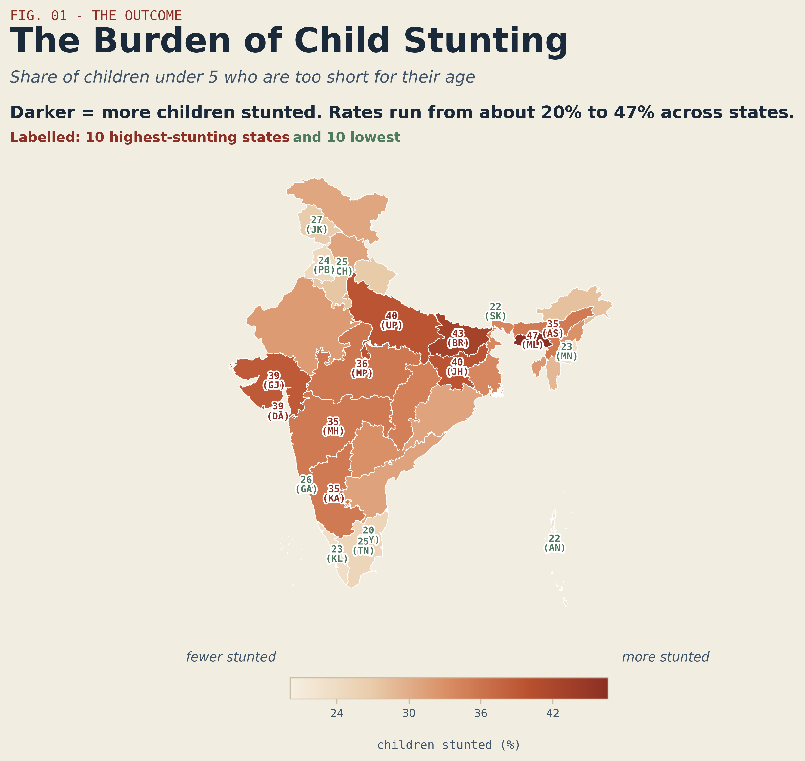
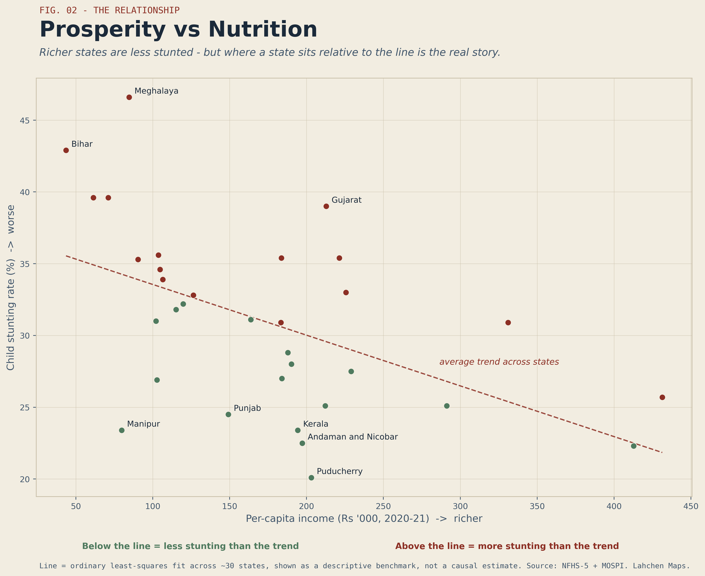
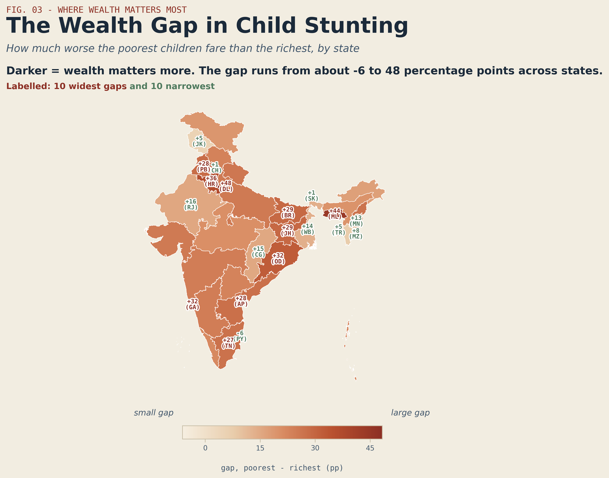
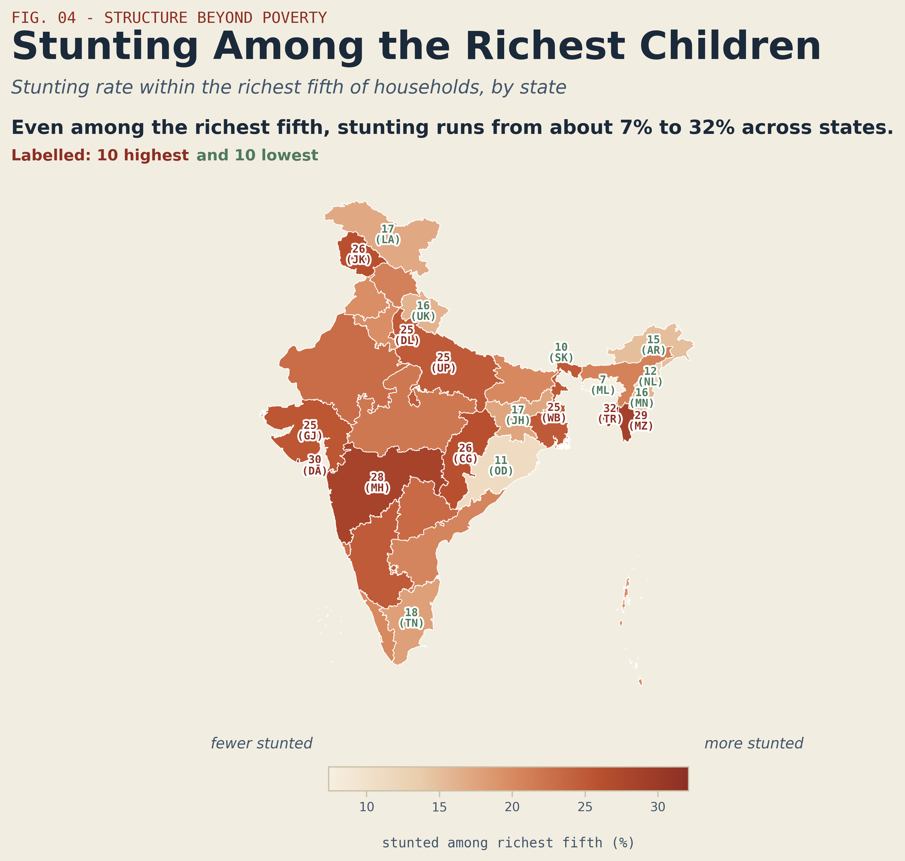

Where a Child Lives
In India, where a child is born shapes their chance of being stunted almost as much as how poor their family is — and the data says so plainly.

Stunting — a child too short for their age — is the clearest single marker of early-life deprivation. It is not the result of one bad month but of years: inadequate nutrition, repeated infection, poor sanitation, and the conditions a child is born into. In India's most recent National Family Health Survey, the national rate sits around a third of all children under five. The map above shows how little that single number tells you.
The spread is more than twofold. At the low end, Tamil Nadu and Sikkim sit near 20 to 22 percent, with Kerala close behind at 23. At the high end, Meghalaya reaches 47 percent, Bihar 43, and Jharkhand and Uttar Pradesh both 40. A child in Meghalaya is more than twice as likely to be stunted as a child in Tamil Nadu. Same country, same survey, same year — and a difference that large.
What's striking is that the map does not divide neatly into rich and poor regions. Gujarat — among India's wealthier states — records 39 percent, higher than far poorer states. The far south and the small northeastern states like Sikkim do well; the central and eastern belt does badly. Geography, not just income, is written all over this map.
A child in Meghalaya is more than twice as likely to be stunted as one in Tamil Nadu — same country, same year.
02Income explains part of it — but Gujarat breaks the rule
If prosperity were the whole answer, plotting each state's economic output against its stunting rate would give a tidy downward line: richer states, fewer stunted children. The next chart does broadly slope that way — but the scatter around the line is the real story.

Bihar sits exactly where you'd expect: very low income, very high stunting, near the top-left corner. But the interesting states are the ones far off the line. Gujarat is the clearest: a relatively prosperous state with output per person well above the middle of the pack, yet it carries 39 percent stunting — sitting high above the trend line, doing far worse than its economy predicts. Punjab tells a milder version of the same story.
Below the line sit the over-performers — states getting more nutrition out of their economic hand than expected. Kerala, Manipur, and Puducherry all land there, with stunting well under what their income would suggest. And at the far right, the high-output outliers Goa and Sikkim sit low, around 22 to 26 percent — though their per-person output figures flatter them, since a small population dividing a concentrated economic base inflates the number without making the average household rich.
The lesson is not that income doesn't matter — it clearly sets a tendency. It is that the tendency is loose enough to leave Gujarat and Kerala, at similar levels of prosperity, on opposite sides of the line. Something other than money is doing the work.
03Within states, poverty bites very unevenly
The next cut goes inside each state, comparing the stunting rate of the poorest fifth of households with the richest fifth. If poverty were uniformly punishing, this gap would be roughly constant. It is not — it ranges from essentially nothing to nearly fifty percentage points.

Delhi has the widest gap of all — 48 percentage points between its poorest and richest children. Haryana follows at 36, then a cluster of large states — Bihar and Jharkhand at 29, Punjab and Andhra Pradesh at 28 — where being born poor is a heavy penalty on a child's growth. In these places, the rich and poor live in effectively different nutritional worlds.
At the other extreme, Puducherry actually runs slightly negative: its richest children are marginally more stunted than its poorest. Sikkim and Chandigarh sit near zero. But a narrow gap is not automatically good news, and this is where the data demands care. A gap can be small because a state has lifted its poorest children up — or because it is failing its richest children too. The next map shows that the second explanation is real.
"Poorest" and "richest" are the bottom and top fifths of households on NFHS's asset-based wealth index — built from what a household owns and its housing and sanitation, ranked across all of India. It captures long-run living standards, not a single year's income, which is why it tracks child nutrition better than headline economic output does.
04And it isn't only about poverty
The final map isolates only the richest fifth of households in each state — children whose families are, by national standards, well-off — and asks how many of them are still stunted. If stunting were purely about poverty, this map would be pale almost everywhere. It is not.

Among the richest fifth, stunting still runs from about 7 percent up to 32. Tripura's wealthiest children are stunted at 32 percent — higher than the overall rate of several states. Maharashtra's richest fifth sits at 28, Gujarat's and Delhi's and Uttar Pradesh's at 25. These are not poor households; they are the top of their state's wealth distribution, and a quarter or more of their children are still too short for their age.
Only a handful of places get their richest children near the floor: Meghalaya at 7 percent, Sikkim at 10, Odisha at 11. Notice that Meghalaya — which had the worst overall rate at 47 percent — has the best outcome for its richest children. That single contrast captures the whole argument: in Meghalaya, wealth buys a child out of stunting almost entirely, while in Tripura or Maharashtra it does not. The protective power of money itself depends on where you are.
Tripura's richest children are stunted at 32 percent — higher than the overall rate of states like Tamil Nadu or Kerala.
05What the four maps say together
Read in sequence, the data tells one coherent story. Stunting is widespread and spread unevenly, from 20 to 47 percent across states. Economic output explains part of that unevenness but leaves clear exceptions — prosperous Gujarat does worse than poorer states, Kerala does better than its income predicts. The penalty of poverty within a state ranges from nothing in Puducherry to 48 points in Delhi. And even the richest children are stunted at rates between 7 and 32 percent, with the protective value of wealth varying enormously by place.
The common thread is place. The state a child is born in — its sanitation, its health systems, its institutions, its diets — shapes their odds of stunting nearly as much as their family's wealth, and sometimes more. A rich child in Tripura faces worse odds than a poor child in some southern states.
This is a description, not a diagnosis. These are associations, not causes; a state that does better than its income predicts may be doing something right, or may simply differ in ways this data does not capture. The numbers cannot tell you why Kerala outperforms and Gujarat lags. But they establish, clearly and repeatedly, that the question worth asking is not only how poor a child's family is — it is where that child lives. That is where the harder work of explanation begins.
Built with NFHS-5 (2019–21) and MOSPI state output data. Code: github.com/NehchalSingh